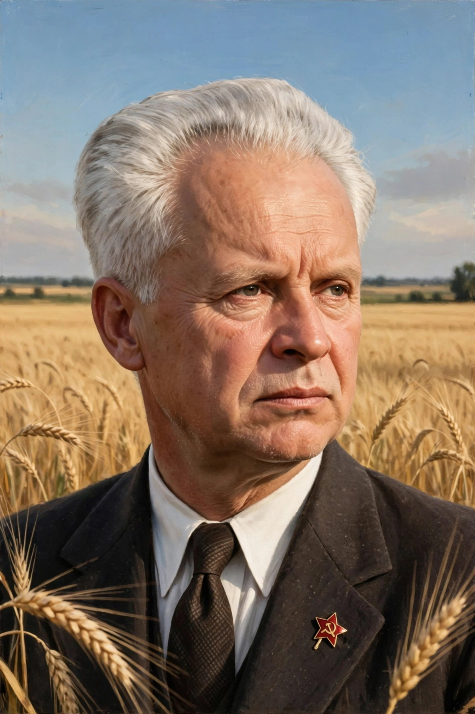

Alexander Dovzhenko
| Alexander Dovzhenko | |
|---|---|
 | |
| Born | Oleksandr Petrovych Dovzhenko 10 September 1894 Sosnytsia, Chernigov Governorate, Russian Empire (now Ukraine) |
| Died | 25 November 1956 (aged 62) Moscow, Soviet Union |
| Occupation | Film director, screenwriter, writer |
| Years active | 1926–1956 |
| Notable work | Zvenigora (1928), Arsenal (1929), Earth (1930) |
| Spouse | Yuliya Solntseva |
Alexander Petrovych Dovzhenko (Ukrainian: Олександр Петрович Довженко; 10 September 1894 – 25 November 1956) was a Ukrainian Soviet screenwriter, film producer and director, regarded as one of the most important filmmakers of the early Soviet period alongside Sergei Eisenstein and Vsevolod Pudovkin. His "Ukraine trilogy" — Zvenigora (1928), Arsenal (1929) and Earth (1930) — is famous for its lyrical, poetic imagery rooted in Ukrainian landscape and folk culture.
Early life
Dovzhenko was born in the village of Sosnytsia in present-day Chernihiv Oblast, one of fourteen children in a peasant family. He trained as a teacher, served in various posts during the revolutionary years, worked as a diplomat in Warsaw and Berlin, and then studied painting in Munich before returning to Ukraine, where he worked as a cartoonist and illustrator in Kharkiv.
The Ukraine trilogy
Joining the Ukrainian state film organization VUFKU (the republican counterpart of Goskino), Dovzhenko made his first films in 1926. Zvenigora ranges across a thousand years of Ukrainian legend; Arsenal, about a revolt at a Kyiv munitions factory in 1918, is marked by stark, static tableaux; and Earth (Zemlya), about collectivization in a Ukrainian village, is widely considered his masterpiece — in 1958 it was voted one of the twelve greatest films of all time at the Brussels World's Fair critics' poll. Though made under the montage tradition pioneered by Kuleshov, Dovzhenko's editing is contemplative rather than dialectical, dwelling on faces, wheat fields and fruit.
Later career
His first sound film, Ivan (1932), concerned the Dnieper dam; Aerograd (1935) and Shchors (1939), the latter commissioned by Stalin personally, followed. During the Second World War he made documentaries about Ukraine's liberation. His post-war film Michurin (1949) was heavily re-edited by the authorities. Dovzhenko spent his last years mainly writing; his autobiographical novella The Enchanted Desna was filmed after his death by his widow Yuliya Solntseva. He died of a heart attack in Moscow in 1956, on the eve of shooting his film Poem of the Sea. The Kyiv film studio is named the Dovzhenko Film Studios in his honour.